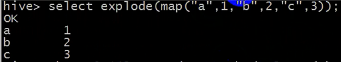

复杂结构类型
见附件
视图：
create view count_student_view as select count(*) from student;
count_stude nt_view ==== select count(*) from student;
创建了上面这个视图后,下面两句sql等价:
select * from (select count(*) from student) aa;
==
select * from count_student_view;
函数:
MySQL中的内置函数: max sum count min avg substring split length .....
hive中的内置函数：
hive-1.2.1 共有216个
hive-2.3.2 共有271个
show functions;
有时会做一些自定义的函数开发。
函数的分类：
内置函数
算术运算
逻辑运算
字符串相关
日期时间相关
..
自定义函数
UDF（用户自定义函数，即user define function）：单行函数，传入一行，返回一行。（主要作用在map阶段，少部分作用在reduce阶段）
UDAF（用户自定义聚集函数，A : aggregate 聚合）： 传入多行， 返回一行。（都作用在reduce阶段）
UDTF（用户自定义表格函数，T ：table 或者transform）：(只有一个,那就是explode) 传入一行，返回多行。（可以在map阶段，也可以用reduce阶段）
内置函数：
举例:
id name
1 a
1 b
1 a
2 a
select id, collect_set(name) from student group by id;
结果:（自动进行了去重）
1 a,b
2 a
select id, collect_list(name) from student group by id;
结果：（未去重）
1 a,b,a
2 a
如果有数据的形式如下
id(int) name(map)
1 a,b,c
则explode函数的效果会如下:( 最终结果：3行 2 列)
1 a
1 b
1 c

length用来求字符串的长度，size用来求map和array的元素个数
编写UDF的步骤 ：
1、搭建hive的开发环境
2、准备hive的java项目， 引入hive的jar包
3、编写一个自定义的类，extends UDF（即该自定义的类要继承UDF类）
4、必须要在该自定义类中去定义一个名叫 evaluate 的方法（也允许有多个该方法的重载）
举个自定义类中的evaluate方法重载的例子：
public String evaluate(String str, int a);
public String evaluate(String str);
5、怎么让hive去使用？
首先要把当前定义的这个hive函数的类打成jar包，然后上传到某台虚拟机中（通过SFTP）加入到当前虚拟机的路径（classpath）中（不用上传到hdfs集群），比如说上传到的是家目录，则hive中加入jar包的方法：
hive> add jar /home/hadoop/xxx.jar;
查看所有hive添加了的jar包的方法：
hive> list jars;
6、通过hive的语法来创建一个函数，对应到当前加入到classpath中的那个jar中的对应的用户自定义类
这样该类中的自定义函数才能使用，hive新创建的函数对应已加入的jar包中的自定义类的方法是：
hive> create temporary function aabb as "com.ghgj.hive.udf.MyUDF";
（其中，aabb是自定义的一个函数名；com.ghgj.hive.udf.MyUDF是自定义类的完全限定名。创建为temporary function（临时函数）的原因是，尽量不要让自定义的函数污染到内置函数，如果是创建持续函数的话则会一直存在。而如果创建的是临时函数，则在你关闭当前的会话连接后，该函数和该jar包就在hive里找不到了,而且这个jar和该临时函数在其他会话里也是看不到的，也就是说当前函数是和当前会话绑定的）
那么使用该自定义函数的方法就是：（按照上面举例中的自定义类中的evaluate方法）
hive> select aabb("huangbo", 2);
hive> select aabb("huangbo");
其中MyUDF类的定义如下图所示：
、视图、函数、各种函数_files/Image [1].png)
1、使用get_json_object()内置函数
问题：如果有以下形式的json数据几百万条：
{"movie":"1193","rate":"5","timeStamp":"978300760","uid":"1"}
、视图、函数、各种函数_files/Image [2].png)
首先在hive中创建一张表，将json数据导入
create database if not exists json;
use json;
#创建只有一个字段的表，这个字段就是一整条json数据，那么也就不需要定义分隔符了
create table jsontable(jsonline string);
load data local inpath "/home/hadoop/rating.json" into table jsontable;
#表中记录过多的时候别忘了用limit查询
select * from jsontable limit 10;
#创建一张存放结果数据的rating表
create table rate(movie int, rate int, ts bigint, uid int) row format delimited fields terminated by ",";
#接着将json数据分割好插入rating表即可
insert into rate select
get_json_object(jsonline, '$.movie') as movie,
get_json_object(jsonline, '$.rate') as rate,
get_json_object(jsonline, '$.timeStamp') as ts,
get_json_object(jsonline, '$.uid') as uid from jsontable;
其中get_json_object(arg1，arg2) 的用法见如下：
arg1是json文本，arg2是路径，也就是要取字段，该函数的返回值的就是该字段对应的值
比如get_json_object(jsonline, '$.movie')得到的就是movie字段对应的值，比如“1193”。
其中“$”表示的是json对象的根目录，“.”是取成员或者子对象，而“[ ]”则是当该对象是数组
时用来取数组中的某一个。
、视图、函数、各种函数_files/Image [3].png)
2、transform：（在上面这个问题的基础上进一步添加需求）
Hive 的 TRANSFORM 关键字提供了在 SQL 中调用自写脚本的功能。适合实现 Hive 中没有的功能又不想写 UDF 的情况。具体以一个实例讲解。
Json 数据： {"movie":"1193","rate":"5","timeStamp":"978300760","uid":"1"}
需求：把json数据中的 timestamp字段的值转换成日期编号的形式
解决步骤：
#新建一张表用来得到最终的结果，表结果样式依旧是分成四个字段，与上一题不同的是没有时间戳字段而是#转换成了日期编号形式
create table lastjsontable(movie int, rate int, weekday int, userid int) row format delimited
fields terminated by '\t';
#在家目录中新建一个文件
vim weekday_mapper.py
并将以下代码添加到该文件中，这些代码的意思就是将前一个问题的结果作为输入，然后把timeStamp的值转换为日期编号的形式，然后打印出来
#!/bin/python （如果是用其他语言的话，这里就改成其他语言）
import sys
import datetime
for line in sys.stdin:
line = line.strip()
movie,rate,unixtime,userid = line.split('\t')
weekday = datetime.datetime.fromtimestamp(float(unixtime)).isoweekday()
print '\t'.join([movie, rate, str(weekday),userid])
#导入Python脚本到hive，必须要导入才能使用，hive才知道weekday_mapper.py 在哪里
add file /home/hadoop/weekday_mapper.py;
#查看加载了哪些脚本文件：
list file；
#最终的将结果数据插入到新建的表中的语句：（注意transform后面跟的字段名要和rate表的字段对应）
insert into table lastjsontable
select transform(movie,rate,ts,uid) using 'python weekday_mapper.py' as(movie,rate,weekday,userid)
from rate;
#检测一下代码是否执行成功：
select distinct(weekday) as weekno from lastjsontable;
执行结果如下：正好对应一周的七天
、视图、函数、各种函数_files/Image [4].png)
这里讲解如何用transform的最大意义：就是给大家提供一种新的方式来处理数据，让我们可以用自己擅长的语言来处理数据，不一定要自定义函数（UDF），而是可以用自己擅长的东西来解决问题：
从而我们处理数就有了以下三种思路：
1、内置函数
2、自定义函数（UDF）
3、调用外部脚本（transform）
3、多字节分隔符的处理：
如果有某个文件中的记录是如下形式，按照“||”分隔：
1||huangbo
2||xuzheng
3||wangbaoqiang
#将上面的数据创建为 bi.dat 文件放在家目录中
#若按照以下方式创建一张表
create table double_dilimiter(id int, name string) row format delimited fields terminated by "||";
load data local inpath "/home/hadoop/bi.txt" into table double_dilimiter;
#查一下该表的所有字段
select * from double_dilimiter;
查询结果如下：（可以发现查询结果和我们想要的结果不一样，即说明多字节的分隔符hive在创建表时不能正确处理）
、视图、函数、各种函数_files/Image [5].png)
如果已经出现了这种多字节的分隔符，那怎么办？？？
通过 desc formatted 表名; 就可以看到表的详细信息，其中的存储信息如下图所示。存储信息主要说明了解析数据时、将别的数据添加到此表时将会采用什么手段、数据添加进表后是什么格式（以及执行每一条sql语句时时用的什么InputFormat、OutputFormat和什么序列化反序列化器，因为hive的执行原理就是将每条sql语句都转换成mapreduce的job来执行），而SerDe Library就是指的序列化反序列化器，而默认的序列化反序列化就是org.apache.hadoop.hive.serde2.lazy.LazySimpleSerDe，而这个序列化器调用的输入组件InputFormat，是我们知道的mapreduce中的InputFormat，OutputFormat则是hive的OutputFormat规则。而InputFormat的规则就是按行逐行读取，然后会按照我们指定的分隔符切分数据，但是LazySimpleSerDe序列化反序列化器没法解析多字节的分隔符，所以导致了错误。所以第一种方法我们只需要换一个能解析多字节分隔符的序列化反序列化器即可解决这个问题，改变序列化反序列化器一般InputFormat和OutputFormat不会随之改变；另一种方法就是改一下InputFormat数据读取的规则也行，比如将多字节的分隔符在读取数据时直接替换成一个字节的分隔符。
、视图、函数、各种函数_files/Image [6].png)
第一种方式， 使用替换SerDe的方式（推荐，最省心，不用写脚本）：
RegexSerDe是一种规则匹配的序列化方式，即一种使用正则表达式指定序列化反序列化规则的方式：
只需创建表时指定序列化反序列化器和正则表达式即可：
create table t_bi_reg(id string,name string)
row format serde 'org.apache.hadoop.hive.serde2.RegexSerDe'
with serdeproperties('input.regex'='(.*)\\|\\|(.*)','output.format.string'='%1$s %2$s')
stored as textfile;
load data local inpath "/home/hadoop/bi.txt" into table t_bi_reg;
select * from t_bi_reg;
其中，'(.*)\\|\\|(.*)' 是一个正则表达式，代表的式子是.*||.* ，也就是||两边出现任何字符都可以，也就是以||作为分隔符的意思。其中因为|是个特殊字符，需要转义，\\表示转义；. 可以代表任意字符，而*代表任意多个字符。'%1$s %2$s' 中，%s是c语言字符串格式的占位符，1$代表的是(.*)\\|\\|(.*)中第一个括号所有的值，由正则表达式可以看出，就是分隔符前面的所有字符组成的字符串，2$代表的是(.*)\\|\\|(.*)中第二个括号所有的值，由正则表达式可以看出，就是分隔符后面的所有字符组成的字符串。%1$s目前占的位置是分隔符前面的字符串，%2$s目前占的位置是分隔符后面的字符串，%1$s就代表表字段的id，%2$s代表表字段的name，所以如果分隔符前面的字符串是name，分隔符后面的字符串是id，则'output.format.string'='%2$s %1$s' 。
从下图中，建表过程可以看出，序列化反序列机制已经改了，但InputFormat和OutputFormat不变，
、视图、函数、各种函数_files/Image [7].png)
第二种方式， 通过自定义 InputFormat 解决特殊分隔符问题：
这种方式写好的代码已经放在了：
项目结构如下：
、视图、函数、各种函数_files/Image [8].png)
可以查看上传的pdf的： “4.2、通过自定义 InputFormat 解决特殊分隔符问题” 了解详细做法
这种方式的目的很简单：让InputFormat读到的数据不是原来的数据，而是先将多字符的分隔符替换成了单字节的分隔符，也就是读到的数据变成了如下形式：
1||huangbo ----> 1|huangbo
2||xuzheng ----> 2|xuzheng
3||wangbaoqiang ----> 3|wangbaoqiang
别看pdf中案例代码那么长，其实也就是在源代码中加了两行代码：
、视图、函数、各种函数_files/Image [9].png)
但要注意的是修改源码前，要先自己新建一个包，在包里建立两个类：BiDelimiterInputFormat类和BiRecordReader类，两个类都在源码里有对应，把源码拷过来后稍微修改即可，然后将整个project打成jar包（和打包类是一样的），将jar包上传Linux系统，然后通过add jar 的方式来将jar包导入hive后，这样的话，jar包里面的类就可以使用了，接下来即可使用下面的建表语句建表了（但要注意的是add jar的方式在关闭会话后导入到hive中的jar包就会消失，所以下次再用sql查询语句查询new_bi表的数据，就会提示BiDelimiterInputFormat类找不到了（因为每条sql语句都会转换为mapreduce的job，所以肯定要调用这些建表时就指定好的序列化器、InputFormat和OutFormat来跑job，但此时hive中已经没有那个jar包，也就没有BiDelimiterInputFormat类了），所以这是一种不持久的办法，另一种让这种InputFormat持久的方法就是将jar包上传到hive的安装目录的lib文件夹，重启hive（只需重启hive即可，不用重开会话），然后即可以后一直使用BiDelimiterInputFormat了，关闭会话重开也一下，这个时候用BiDelimiterInputFormat类时就不需要add jar了，因为它已经在类库里了）：
#建表语句：
create table new_bi(id string,name string)
row format delimited
fields terminated by '|'
stored as inputformat 'com.ghgj.hive.dbdelimiter.BiDelimiterInputFormat' outputformat
'org.apache.hadoop.hive.ql.io.HiveIgnoreKeyTextOutputFormat';
#注意上面的com.ghgj.hive.dbdelimiter.BiDelimiterInputFormat是完全限定名，取决于创建的包名是什么
#导入数据
load data local inpath "/home/hadoop/bi.dat" into table new_bi;
然后通过desc formatted 表名; 命令，可以发现InputFormat的默认规则改了，其他不变：
、视图、函数、各种函数_files/Image [10].png)
———————————————————————手写与上传资料分割线——————————————————————